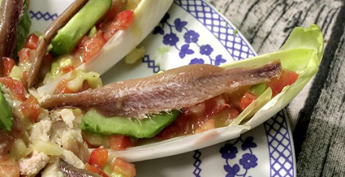

RECETA DE ENSALADA DE ENDIVIAS Y AGUACATE
Ingredientes
- 4 Endivias
- 2 Aguacates
- 150g De anchoas en aceite
- 100g De atún en conserva
- 1 Cebolleta
- 1/2 Pimiento rojo
- 1 Tomate
- El jugo de 1 limón
- Sal
- Aceite
Paso a paso
- Limpiamos y deshojamos las endivias. Las colocamos en un plato o en una bandeja. Estas hojas de endivia servirán como base para el resto de ingredientes.
- Cortamos uno de los aguacates en tiras y reservamos en un bol. Para que no se oxide, mientras preparamos el aliño de nuestra ensalada de endivias y aguacate, añadimos un chorrito de jugo de limón.
- A continuación, en otro bol, ponemos el otro aguacate, el tomate, la cebolleta y el pimiento rojo. Todo ello bien picado. Agregamos el resto del jugo del limón, un chorrito de aceite y una pizca de sal. Mezclamos bien todos los ingredientes y reservamos.
- Montamos nuestra ensalada de endivias y aguacate. Sobre cada una de las hojas de endivia, ponemos un poco de atún previamente escurrido de su aceite, una cucharada del aliño que acabamos de preparar, una tira de aguacate y una anchoa. Servimos.
Resultado final
